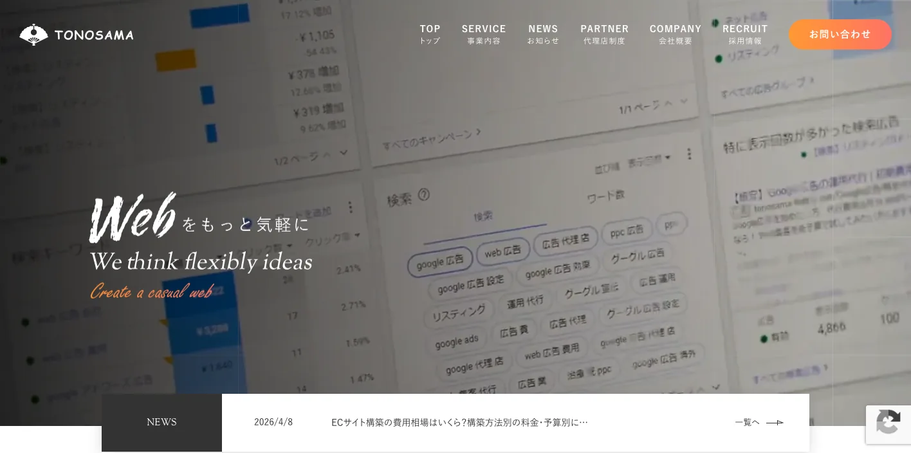
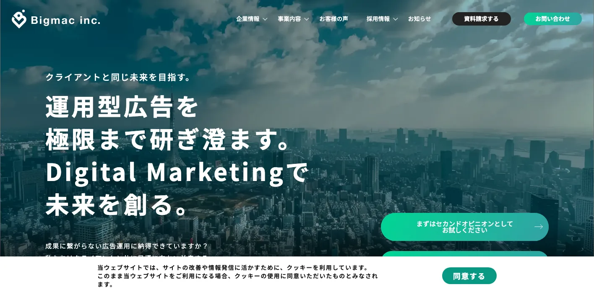
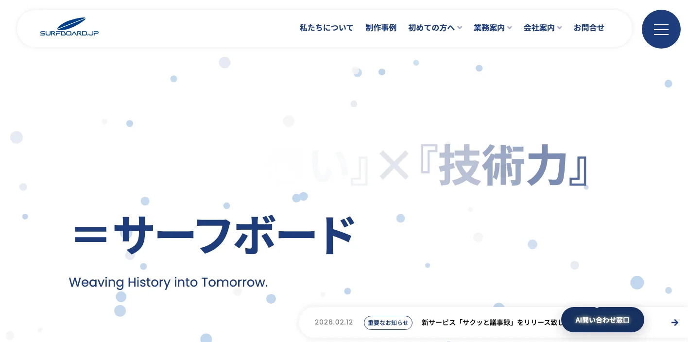
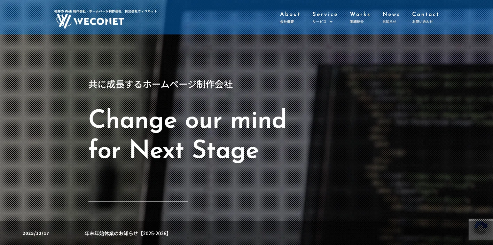
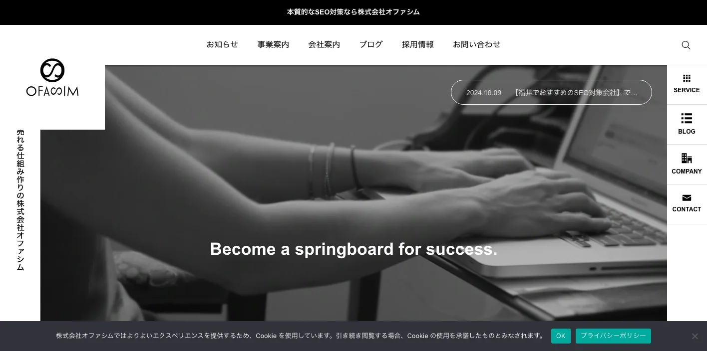
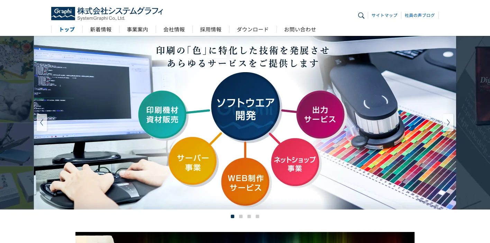
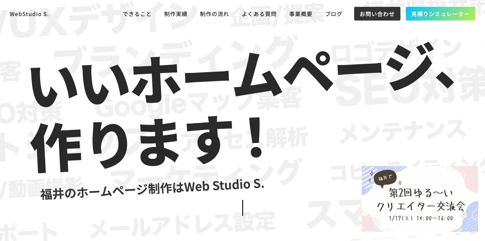
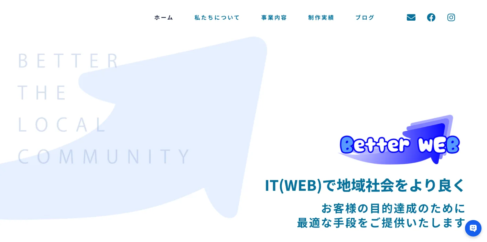
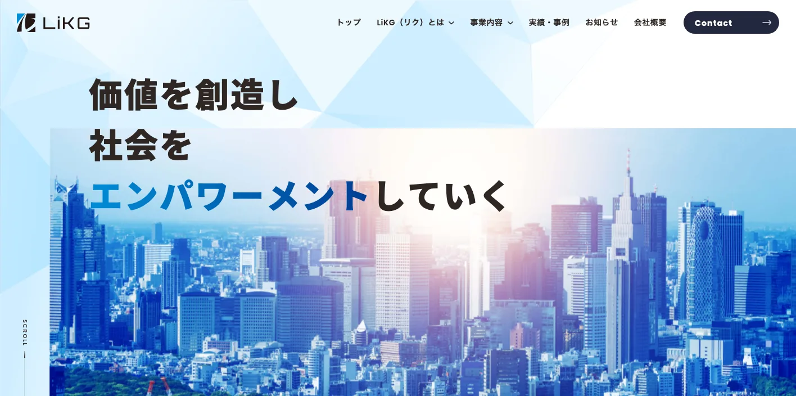

福井県でおすすめのLLMO会社10選｜費用相場と選び方もわかりやすく解説

福井県でLLMO会社を選ぶときは、「福井のホームページ制作会社」や「福井のSEO会社」という探し方だけでは足りません。福井市の生活者向けサービスと法人商圏、鯖江市の眼鏡関連産業、越前市・坂井市の製造、敦賀市・小浜市を含む嶺南の観光・港湾・エネルギー、あわら温泉・永平寺・恐竜博物館・東尋坊の観光では、AI検索で聞かれる質問が違うからです。
福井県の推計人口は、令和8年3月1日現在で728,961人、世帯数は300,904世帯です。令和6年の観光客入込数は実人数で2,069.1万人となり、確認できる平成元年からの過去36年で最高値とされています。2024年経済構造実態調査の福井県分では、製造業計が2,553事業所、従業者75,549人、製造品出荷額等2兆6,496億50百万円でした。人口規模だけでなく、観光と製造の質問を分けて情報設計する必要があります。
この記事では、福井県でLLMOに取り組むときに比較したい会社、選び方、費用相場をまとめます。基礎から確認したい方はLLMO対策の基礎記事、北陸の近隣県も見たい方は石川県の比較記事や富山県の比較記事も参考になります。自社サイトの現状を先に見たい場合は無料LLMO診断から確認できます。
目次

福井県でおすすめのLLMO会社10選
今回は、福井県内に拠点があり、ホームページ制作、SEO、Webマーケティング、広告、システム開発、AI活用、運用改善などの公開情報を確認しやすい会社を中心に、LLMOを明示している全国対応会社も補完的に加えました。福井県内で「LLMO専業」を大きく打ち出す会社はまだ多くないため、AI検索対策そのものだけでなく、サイト構造、FAQ、地域ページ、事例、製品情報、観光情報、採用情報、更新体制まで支援できるかを見ています。
福井県では、福井市の都市型サービス、鯖江の眼鏡、越前・坂井の製造、敦賀・若狭の観光と交通、あわら温泉や永平寺、恐竜博物館周辺の観光など、AIに答えさせたい質問が地域ごとに変わります。まずは表で向いている企業を確認し、その後に各社の特徴を見てください。
| 会社名 | 拠点性 | 向いている企業 | 支援の軸 |
|---|---|---|---|
| 株式会社TONOSAMA | 福井市 | SEO、広告、制作、採用支援までまとめて相談したい企業 | SEO対策・広告運用・ホームページ制作・Webコンサル |
| Bigmac株式会社 | 福井市 | 広告運用とデジタルマーケティングを強くしたい企業 | デジタル広告運用・SNS・クリエイティブ・コンサルティング |
| 株式会社サーフボード | 福井市 | 老舗の制作会社にWeb制作とシステムを相談したい企業 | ホームページ制作・AI×クラウド・Webシステム・採用支援 |
| 株式会社ウィコネット | 越前市 | 越前市・鯖江市・丹南エリアで制作と運用を続けたい企業 | ホームページ制作・運用サポート・動画・Webコンサル |
| 株式会社オファシム | 福井県内対応 | SEOを軸にマーケティングの本質から見直したい企業 | SEO対策・SNS運用・Webマーケティング・顧問支援 |
| 株式会社システムグラフィ | 鯖江市 | Web制作とシステム・印刷関連の技術を一体で相談したい企業 | ホームページ制作・CMS・ソフトウェア開発・資材販売 |
| Web Studio S. | 福井県内対応 | 小規模事業者が制作・写真・文章まで相談したい場合 | ホームページ制作・EC・採用・LP・Webマーケティング |
| 株式会社Better WEB | 福井県内対応 | 生成AI活用とWeb制作を同時に進めたい企業 | 生成AI活用支援・ホームページ制作・MEO・システム開発 |
| 株式会社LiKG | 全国対応 | LLMO診断から記事制作まで任せたい企業 | LLMO診断・LLMO×SEO伴走・EEAT記事制作 |
| 株式会社ジオコード | 全国対応 | SEOとAI最適化を実装込みで進めたい企業 | SEO・コンテンツ・AIO/LLMO・サイト修正 |
株式会社AIMAは福井本社の会社ではありませんが、全国対応でLLMO支援を提供しています。月額5万円のLLMO支援は初期費用なし・1ヶ月単位で始められ、質問設計、記事制作、引用チェックに絞って実務を進められます。福井市、鯖江市、越前市、坂井市、敦賀市、小浜市、あわら市のように検索文脈が分かれる場合も、まず無料LLMO診断で優先順位を確認できます。
1. 株式会社TONOSAMA

株式会社TONOSAMAは、福井を拠点にWebコンサルティングを行う会社です。公式サイトでは、ホームページ制作、ネットショップ制作、リスティング広告、SEO対策をワンストップで提供していること、Webマーケティング、MEO、SNS広告、LP制作、システム開発、採用支援などを確認できます。
福井県でLLMOを進める場合、SEO、広告、採用、制作がバラバラだと、AIに引用される情報も分散します。TONOSAMAは、福井市を中心に地域店舗、採用、EC、BtoBサービスまで、検索流入と問い合わせ導線をまとめて整えたい企業に向いています。
2. Bigmac株式会社

Bigmac株式会社は、福井に本社を置くデジタルマーケティング会社です。公式サイトでは、運用型広告、デジタル広告、SNS広告、ホームページ制作、LP制作、動画マーケティング、コンサルティング、グローバル広告などを案内しています。
LLMOでは、記事やFAQだけでなく、広告で獲得したユーザーが何を疑問に思うか、LPやサービスページにどの情報が足りないかも重要です。Bigmacは、福井県内で広告運用、LP改善、SNS、動画、クリエイティブまで横断しながら、AI検索に耐える情報設計を進めたい企業に向いています。
3. 株式会社サーフボード

株式会社サーフボードは、福井のホームページ制作会社です。公式サイトでは、1996年創業、800社以上のホームページやWebシステムの構築実績、ホームページ制作、AI×クラウド業務支援サービス、Webシステム開発、Webコンサルティング、採用ソリューション事業を確認できます。
福井県の中小企業では、既存サイトが古い、採用ページが弱い、更新できない、業務システムとWebが分かれているという課題が起きやすいです。サーフボードは、福井市を中心に、サイト制作と業務支援、採用、システム開発まで含めて整えたい企業に向いています。
4. 株式会社ウィコネット

株式会社ウィコネットは、福井県越前市でWeb制作、ホームページ制作を行う会社です。公式サイトでは、コーポレートサイト制作、リクルートサイト制作、ホームページ更新・修正、キャンペーンページ制作、Web運用サポート、動画撮影・編集などを確認できます。
丹南エリアでは、越前市、鯖江市、越前町、南越前町で、製造、眼鏡、伝統工芸、地域店舗、採用の質問が分かれます。ウィコネットは、公開後の更新や運用サポートも含め、AIに読み取られる情報を継続的に直したい企業に向いています。
5. 株式会社オファシム

株式会社オファシムは、福井県のマーケティング会社です。公式サイトでは、小手先のテクニックに頼らない本質的なSEO対策、各種マーケティング業務、SNS運用、ホームページ活用、事業設計、商品開発、継続施策、月額33,000円からのマーケティング顧問サービスなどを確認できます。
LLMOは、AI検索に合わせてページを増やすだけでは成果が出ません。商品やサービスの選ばれる理由、価格、実績、顧客の不安、継続施策を整理する必要があります。オファシムは、福井県内でSEOとマーケティングの考え方を社内に入れたい企業に向いています。
6. 株式会社システムグラフィ

株式会社システムグラフィは、福井県鯖江市に本社を置く会社です。公式サイトでは、ホームページ制作、ソフトウェア開発、資材販売、CMS、グラフィックソフト、業務用プリンター関連などを確認できます。採用サイトや公式情報では、システム、資材、Web、印刷の事業を展開していることも確認できます。
鯖江市は眼鏡産業の印象が強い一方、製造、印刷、EC、BtoB取引、採用でも情報整理が重要です。システムグラフィは、Webサイトだけでなく、システムや業務データ、製品情報まで含めて、AIが誤解しない形に整えたい企業に向いています。
7. Web Studio S.

Web Studio S.は、福井県を拠点に活動するホームページ制作チームです。公式サイトでは、コーポレート、EC、採用、LPなどの制作、文章作成、写真撮影、ロゴ・イラスト作成、アクセス分析、Webマーケティングなどを確認できます。
地域店舗や小規模事業者のLLMOでは、会社の強み、料金、対応エリア、予約、写真、よくある質問が足りていないことが多いです。Web Studio S.は、福井県内で初めてのサイト改善や小さな運用から始めたい企業に向いています。
8. 株式会社Better WEB

株式会社Better WEBは、福井県内を中心に生成AIのセミナーや生成AI活用支援、ホームページ、ネットショップ、システム開発、MEO対策などを行う会社です。公式サイトでは、福井県のような地域こそITやWebを活用すべきという考え方も示されています。
LLMOは生成AIの回答にどう出るかを整える施策なので、生成AIの活用理解がある会社は相性があります。Better WEBは、福井県内の中小企業がAI活用、Web制作、MEO、業務支援をまとめて考えたい場合に向いています。
9. 株式会社LiKG

株式会社LiKGは、LLMOコンサルティングを明示している全国対応会社です。公式サービスページでは、AI検索での露出状況を調査するLLMO診断、LLMO×SEOコンサルティング、EEAT強化記事制作を案内しています。料金は、LLMO診断プラン10万円から、LLMO×SEOコンサルティングプラン30万円から、EEAT強化記事制作5万円/1記事からと公開されています。
福井県の企業がLiKGを比較するなら、県内取材や撮影よりも、AI検索の現状診断、独自データの活用、構造化データ、記事制作、全国競合との比較を重視する場合です。眼鏡、繊維、観光、採用などで、既存SEOはあるがAI検索でどう見られているか分からない企業に向いています。
10. 株式会社ジオコード

株式会社ジオコードは、SEO対策、コンテンツマーケティング、AIO・LLMOなどのAI最適化を案内している全国対応会社です。公式ページでは、SEO・コンテンツ・オウンドメディアからAI最適化まで支援すること、通常プラン15万円から、スタンダードプラン月30万円からなどの情報を確認できます。
福井県の企業がジオコードを比較するなら、サイト修正や実装を含むSEO・LLMO支援を重視する場合です。県外競合と比較される製造業、観光、EC、医療、採用など、既存サイトの技術改善まで必要な企業に向いています。県内制作会社と分担する選び方もあります。
参考：株式会社ジオコード｜SEO対策・AIO・LLMOなどAI最適化
福井県のLLMO会社を比較する際のポイント
このブロックでは、会社名の知名度ではなく、福井県で成果に直結しやすい比較軸を整理します。会社紹介では「誰に向いているか」を見ましたが、ここでは発注前に見るべき能力を、福井市、丹南、嶺南、製造業、観光、県内密着と全国対応の使い分けに分けます。
福井市の生活者向けサービスと法人商圏を分けられるか
福井市は県内最大の人口を持ち、医療、美容、士業、不動産、住宅、教育、採用、法人営業の中心になりやすい地域です。AI検索では「福井市でおすすめの歯科」「福井市の相続に強い専門家」「福井市の採用に強い会社」のように、地名、目的、条件が組み合わされます。
LLMO会社には、単に「福井市対応」と書くだけでなく、料金、アクセス、予約、対応範囲、専門性、実績、よくある不安をページに落とし込めるかを確認してください。店舗向けと法人向けでは必要な根拠が違うため、同じ文章を使い回す会社は避けたほうが安全です。
鯖江・越前・坂井の眼鏡、繊維、製造業を技術情報として説明できるか
福井県の製造業では、繊維工業、電子部品、電気機械、化学、プラスチック、金属、眼鏡関連など、技術や作り手の情報が価値になります。BtoBでは、設備、素材、加工範囲、対応ロット、納期、品質管理、認証、図面対応、試作、導入実績が比較材料になります。
LLMO会社には、製品ページをきれいにするだけでなく、営業資料や現場の説明をWeb上の一次情報に変換する力が必要です。鯖江の眼鏡、越前のものづくり、坂井の工業系企業では、AIが誤解しないよう、技術用語と顧客の質問を橋渡しできる会社を選びましょう。
敦賀・小浜・若狭の嶺南商圏と交通文脈を扱えるか
敦賀市は北陸新幹線の終着駅、港湾、交通、観光、エネルギー関連の質問が出やすい地域です。小浜市、若狭町、美浜町、高浜町、おおい町では、観光、食、宿泊、医療福祉、地域サービス、移動手段の質問が増えます。
嶺南地域を狙うなら、福井市中心の記事だけでは足りません。駅からの移動、車での所要時間、宿泊、飲食、観光ルート、地域産品、企業の対応エリアを整理できるかを確認してください。LLMOでは、地理を無視した情報設計はユーザーの不安を増やします。
恐竜博物館、永平寺、東尋坊、あわら温泉の観光質問を最新化できるか
令和6年の福井県観光客入込数は実人数で2,069.1万人となり、過去36年で最高値とされています。観光地では、かつやま恐竜の森周辺、氣比神宮、一乗谷朝倉氏遺跡、東尋坊、あわら温泉、永平寺、越前海岸、レインボーラインなど、ユーザーの質問が季節や交通に左右されます。
観光・宿泊・飲食業がLLMO会社を選ぶなら、記事制作だけでなく、営業時間、予約、交通、イベント、天候、キャンセル、周辺観光、外国語情報を更新できる体制を見てください。北陸新幹線延伸後は、駅から観光地までの移動や周遊ルートの情報が特に重要です。
眼鏡、越前がに、越前そば、地酒、伝統工芸を商品説明に落とせるか
福井県には、鯖江の眼鏡、越前がに、越前そば、地酒、越前和紙、越前打刃物、若狭塗、伝統工芸など、地域性の強い商品があります。ECや観光土産では、産地、素材、作り手、保存方法、使い方、ギフト、発送、法人利用、歴史が比較材料になります。
LLMO会社には、商品ページをきれいに作るだけでなく、買う前の不安をFAQや比較表に落とし込む力が必要です。地名だけを差し替えた記事ではなく、商品ごとの質問、地域ブランドの背景、店舗や工房の一次情報を出せるかを確認してください。
県内密着と全国対応を、作業内容で使い分けられるか
福井県内の会社は、現地取材、撮影、地域商圏、製造や観光の肌感覚に強いことが多いです。一方で、LLMO専業やSEO大手は、AI検索の診断、構造化データ、既存記事改善、全国競合の比較に強い場合があります。
どちらが正しいというより、作業内容で選ぶのが現実的です。現場撮影や地域取材が必要なら県内会社、AI検索での露出状況を分析したいならLLMOを明示している会社、両方必要なら県内制作会社と全国LLMO会社の分担も選択肢になります。
参考：福井県の人口と世帯（推計）令和8年3月1日現在、令和6年 福井県観光客入込数、福井県の工業 令和6年経済構造実態調査
福井県のLLMO会社に依頼する費用相場
LLMOの費用は、診断だけなのか、記事制作まで含むのか、サイト改修や撮影、EC、システム開発まで必要なのかで変わります。福井県では、福井市の生活者向けサービス、鯖江・越前の製造、敦賀・若狭の観光と交通、あわら温泉や恐竜博物館周辺の観光のように、追加で作るべきページやFAQの量が業種によって大きく変わります。
| 依頼内容 | 費用目安 | 福井県での考え方 |
|---|---|---|
| LLMO診断・AI検索の現状確認 | 無料〜10万円前後 | 自社名、地域名、業種名でAIにどう出るかを見る段階 |
| 小規模なSEO・LLMO運用 | 月額5万円〜15万円前後 | FAQ、地域ページ、既存記事改善を小さく回す段階 |
| 伴走型のSEO・LLMO支援 | 月額15万円〜30万円前後 | 競合調査、構成作成、構造化データ、改善提案、定例を含む段階 |
| サイト制作・改修込み | 30万円台〜200万円超 | 撮影、採用、EC、予約、製品情報、システム連携の有無で広がる |
| 製造業・観光・多拠点の本格運用 | 月額30万円以上 | 複数地域、製品カテゴリ、営業資料、事例制作まで必要な段階 |
まずは診断だけなら無料〜10万円前後から始めやすい
最初にやるべきことは、AI検索で自社がどう扱われているかを確認することです。自社名、サービス名、地域名、競合名、料金、評判、比較などで質問し、AIが何を根拠に回答しているかを見ます。ここを飛ばして記事を増やすと、見当違いの質問に答えるページばかり作ることになります。
福井県の場合、「福井市 歯科 おすすめ」「鯖江 眼鏡 OEM」「越前市 製造業 試作」「敦賀 観光 子連れ」「あわら温泉 宿 比較」「若狭 海鮮 おすすめ」のように、地名と目的の組み合わせが多くなります。診断段階では、どの質問で選ばれるべきかを決めることが重要です。
小さく始めるなら月額5万円〜15万円帯が入口になる
小規模事業者や地域店舗なら、最初から大きな予算を組む必要はありません。既存ページの見出し改善、FAQ追加、会社情報の整理、地域ページの追加、Googleビジネスプロフィールの見直しだけでも、AIが理解しやすい状態に近づきます。
福井市、坂井、鯖江、越前、敦賀、小浜の生活商圏では、料金、予約、駐車場、駅やインターからの距離、対応エリア、納期、相談の流れ、キャンセル、支払い方法など、基本情報が問い合わせ前の不安を減らします。この価格帯では、AIが参照できる情報の欠落を埋めることが現実的な成果になります。
伴走支援の中心帯は月額15万円〜30万円前後
毎月改善を続けるなら、月額15万円〜30万円前後が一つの中心帯です。この価格帯では、競合調査、AI検索での露出調査、記事構成、既存ページ改善、構造化データ、レポート、定例打ち合わせまで含まれやすくなります。
福井県の企業では、眼鏡、繊維、電子部品、機械、食品、観光、医療福祉、採用など、社内にある一次情報の棚卸しが必要な業種ほど伴走支援が向いています。社内に担当者がいるなら、LLMO会社には戦略と構成を任せ、社内で技術情報や現場情報を出す形にすると費用対効果が上がります。
制作・撮影・EC・採用まで含めると総額は広がる
ホームページを作り直す、写真撮影をする、動画を作る、採用ページを整える、ECや予約システムとつなぐ場合は、費用が大きく変わります。福井県では、観光施設、旅館、食品メーカー、眼鏡・繊維・機械の製造業、医療、住宅、地域店舗で、写真や事例が成果に直結しやすいです。
制作費だけを見るのではなく、公開後に誰が更新するのか、FAQを追加できるのか、AI検索での出方を見て直せるのかを確認してください。安く作っても、季節情報、営業情報、製品情報、交通情報が古くなればLLMOの効果は落ちます。
嶺北・嶺南・丹南を同時に狙うならページ数と更新頻度を見積もる
福井市だけを狙う場合と、鯖江・越前・坂井・敦賀・若狭・あわらまで狙う場合では、必要なページ数が変わります。ただし、地名だけを差し替えた薄いページは逆効果です。各地域の商圏、交通、観光、産業、利用者の不安、提供できるサービスの違いまで書けるかが重要です。
見積もりでは「何ページ作るか」だけでなく、「各ページで何を答えるか」まで確認しましょう。とくに観光や製造では、更新日、営業状況、納期、交通、予約、配送、支援制度など、古くなると困る情報を誰が更新するかを先に決めておくべきです。
参考：株式会社LiKG｜LLMOコンサルティング、株式会社ジオコード｜SEO対策・AI最適化、株式会社TONOSAMA｜SEO対策
福井県のLLMO会社に関するよくある質問
福井県のLLMO会社に依頼する意味はありますか？
あります。福井県は福井市の生活・法人商圏、鯖江市の眼鏡関連産業、越前市・坂井市の製造、敦賀市・小浜市を含む嶺南の観光・エネルギー・物流、あわら温泉や恐竜博物館周辺の観光で検索意図が分かれます。地名と業種ごとに一次情報を整理する意味があります。
福井県内の会社でないとLLMOは任せられませんか？
必ずしも県内本社である必要はありません。現地取材、撮影、地域商圏、観光や製造の肌感覚が必要なら県内会社が向きます。一方で、AI検索の診断、構造化データ、既存記事改善、全国競合との比較は、LLMOを明示している全国対応会社も選択肢になります。
福井市と鯖江市・越前市では、対策内容は変わりますか？
変わります。福井市は生活者向けサービス、医療、士業、採用、法人営業が中心になりやすい一方、鯖江市は眼鏡、越前市は製造、伝統工芸、北陸新幹線の越前たけふ駅周辺の観光・交通文脈が強くなります。同じ福井県でもページで答える内容を分ける必要があります。
敦賀市・小浜市・若狭地域でもLLMOは必要ですか？
必要です。敦賀市は北陸新幹線の終着駅、港湾、交通、観光、エネルギー関連の質問が出やすく、小浜市・若狭地域では観光、食、宿泊、交通、医療福祉、地域サービスの質問が増えます。嶺北だけの情報設計では取りこぼしが出やすくなります。
福井県の製造業でもLLMOは使えますか？
使えます。眼鏡、繊維、電子部品、電気機械、化学、プラスチック、金属、食品では、設備、素材、加工範囲、品質管理、対応ロット、納期、技術資料、導入実績をAIが読み取れる形で出すことが重要です。BtoBでは製品ページ、事例、FAQの精度が問い合わせ前の比較に効きます。
観光・宿泊・飲食業では何を整えるべきですか？
恐竜博物館、東尋坊、永平寺、あわら温泉、越前海岸、若狭、敦賀周辺では、アクセス、予約、周遊ルート、季節イベント、子連れ対応、外国人対応、決済、天候、キャンセル、交通の変更を整えるべきです。北陸新幹線延伸後は、駅からの移動や複数観光地の回り方も重要です。
福井県のLLMO費用はどれくらい見ておけばよいですか？
診断だけなら無料から10万円前後、小さな運用なら月額5万円から15万円前後、伴走支援は月額15万円から30万円前後が目安です。撮影、取材、サイト改修、EC、採用、製品ページ、多地域展開を含めると総額は上がります。
成果が出るまでの期間はどれくらいですか？
まず3か月から6か月を目安に見ます。既存サイトの情報量、競合の強さ、FAQや事例の整備状況、構造化データ、更新体制によって変わります。短期で断定せず、AI検索での見え方を観測しながら改善する進め方が現実的です。
福井県でLLMO会社を選ぶなら、福井市中心と丹南・嶺南の質問を分けて考えましょう
福井県のLLMO会社選びでは、福井市、鯖江市、越前市、坂井市、敦賀市、小浜市、あわら市を同じ文章でまとめないことが重要です。福井市の生活者向けサービス、鯖江の眼鏡、越前・坂井の製造、敦賀・若狭の観光と交通、あわら温泉や永平寺周辺では、AI検索で聞かれる質問がかなり違います。
まずは、自社が「近隣の生活者」を狙うのか、「県内広域の見込み客」を狙うのか、「製造・観光・食品・採用など目的検索」を狙うのかを決めてください。そのうえで、戦略だけでなく、ページ改修、記事制作、FAQ、構造化データ、写真、更新運用まで実行できる会社を選ぶと前に進めやすいです。迷う場合は、LLMO対策の基礎を確認し、必要なら無料LLMO診断やお問い合わせから、自社がどの質問で選ばれるべきかを整理していきましょう。